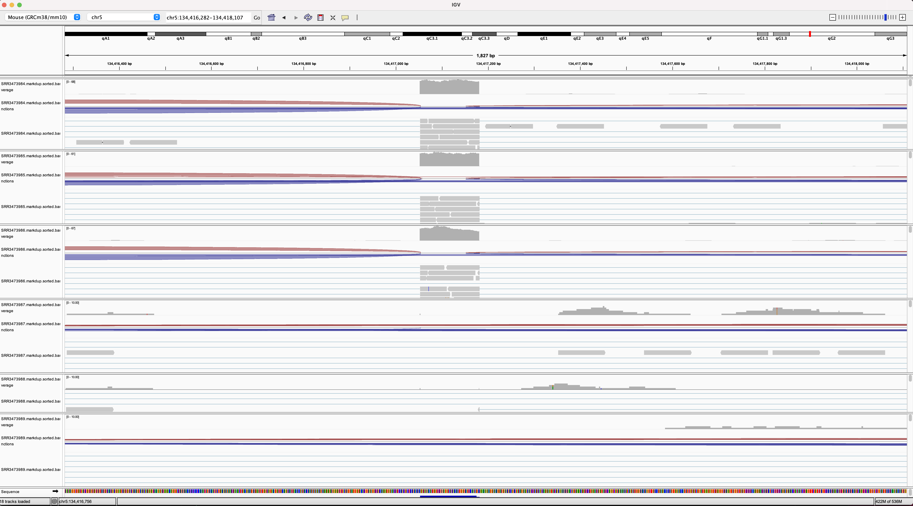

Alignment to reference genome and quantification
Questions
- How to map sequencing reads to a reference genome?
- How to use the mapped alignments to quantify gene-counts
Objectives
- Understand the alignment/mapping process
- Understand the output sam/bam formats
- Understand the convertion of read-alignments to gene-counts
nf-core/rnaseq: (Genome alignment and quantification):
Alignment to reference genome
- After trimming, the next step of processing RNA-seq data is to map the reads to a reference genome. RNA-seq specific aligner needs to be used to accomodate splicing. The most commonly used aligners for short-read sequencing are STAR, HISAT2 etc.
- The output of the alignment step is a bam file, which is a compressed (“B”inary) form of a sam file.
The next challenge will be done in breakout rooms. A facilitator will handle the big bam files on their side using a tool call IGV which will be followed by a discussion.
Challenge
- Open the application: The Integrative Genomics Viewer (IGV).
- Open the 6 pre-aligned bam files. These files contain the reads which are aligned specifically to the region flanking our gene of interest which is
Gtf2ird1. - This will be a good time to revisit the
The case studywhich is mentioned in the Introductory slides. - Once the bam files are opened in the IGV viewer, we can navigate to the exact region of the gene
Gtf2ird1. - We have forgotten to label our samples and don’t know which samples belong to the wildtype or knockout group! So, instead, we will use the alignments and assign samples to their correct treatment group (wildtype or knockout)

- Based on the observation (which is…), can you identify which samples belong to the
WTand which of them are theKOsamples? Please paste your answers in the breakout chat window.
Solution
- A loss of function mutation of Gtf2ird1 was generated by a random insertion of a Myc transgene into the region, resulting in a 40 kb deletion surrounding exon 1.
- Samples
SRR3473984,SRR3473985,SRR3473984contain reads supporting exon 1. These areWTsamples. - Samples
SRR3473987,SRR3473988,SRR3473989DO NOT contain reads supporting exon 1. These areKOsamples.
Pseudo-aligners
As salmon is part of the alignment tool STAR_salmon in nf-core/rnaseq, I will quickly discuss Pseudo-aligners and salmon here
Read quantification
The reads mapped to the reference genome are then converted to a matrix which contains individual gene-counts per sample using the tool featurecounts . The gene-count matrix can then be used for identification of differentially expressed genes.
Challenge
- Identify the output folder in which the alignment and quantification results are placed.
- Identify and check ouit a few files HINT You can use the unix command
catwhich prints content of a file onto the terminal.
Solution
There are quite a few files geenrated in this step. We can try and discuss a few which are of interest.Key points
- Tools such as STAR and HISAT2 can be used for splice-aware alignemnet of RNA-Seq reads.
- Tools such as featurecounts can be used to quantify the aligned-reads to gene-counts.
All materials copyright Sydney Informatics Hub, University of Sydney